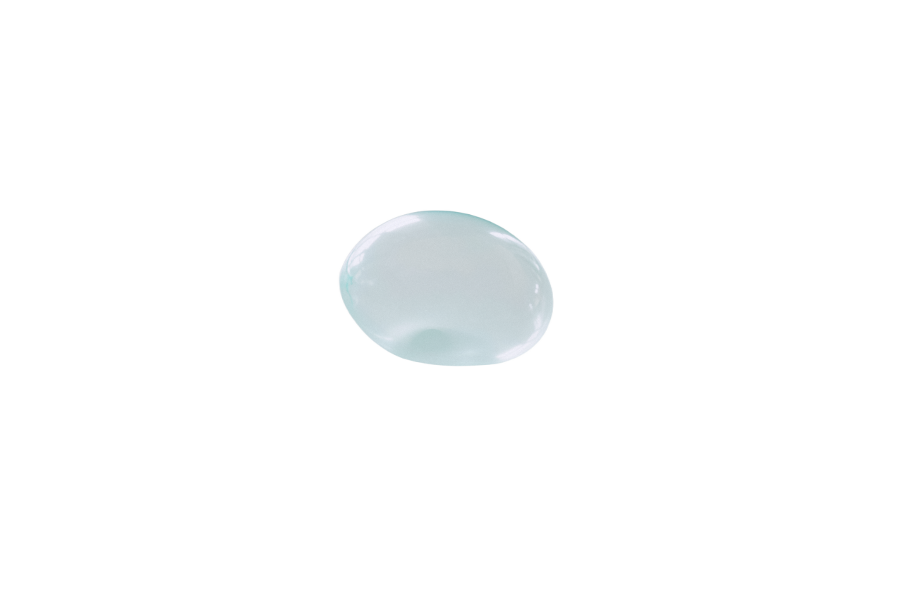

Quality
为每一个设计决定留下思考的空间。在形式、功能与语境之间，寻找恰当的平衡。
产品、视觉与数字体验。
在不同领域之间，寻找设计的共同语言。
Studies in form, material & movement.
广州美术学院
产品设计艺术设计系

在产品、视觉与数字世界之间，
探索形式的可能，
让想法成为可感知的体验。
为每一个设计决定留下思考的空间。在形式、功能与语境之间，寻找恰当的平衡。
关注人与设计相遇时的感受。让材质、比例与交互共同构成自然、直觉的体验。
从真实的问题出发，保持清晰的表达。让每个细节都有它存在的理由。